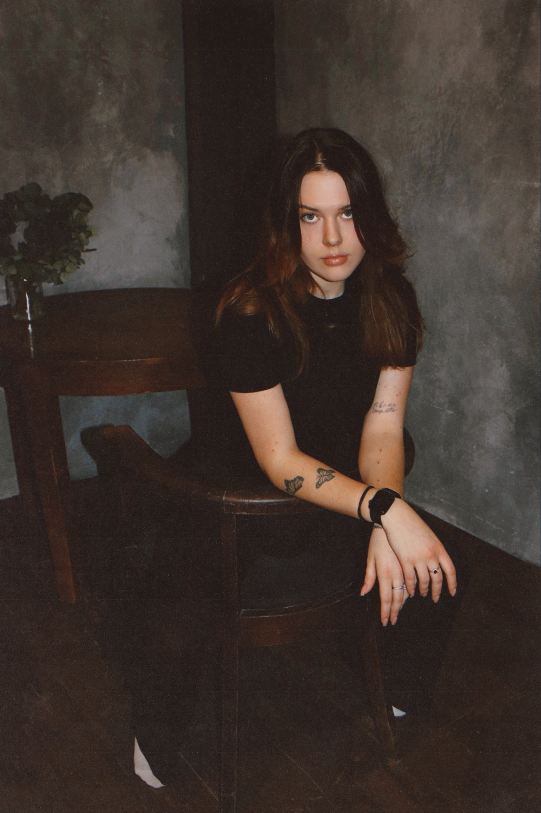

Виолетта Игоревна Дорчинец - вдохновляющий руководитель нашей студии йоги. Родилась 27 апреля 2004 года, она с юных лет проявляла интерес к здоровому образу жизни, гармонии тела и духа.
Несмотря на молодой возраст, Виолетта уже успела получить профессиональное образование в области йоги и фитнеса, а также пройти обучение у ведущих мастеров. Её энергия, целеустремлённость и искренняя любовь к своему делу стали основой для создания студии, где каждый чувствует себя частью большой и дружной семьи.
Виолетта убеждена: йога - это не только про гибкость и силу, но и про внутреннюю трансформацию, осознанность и радость каждого дня. Под её руководством студия развивается, внедряет новые направления и проекты, а атмосфера всегда остаётся тёплой и вдохновляющей.
Виолетта лично проводит мастер-классы, участвует в жизни сообщества и всегда открыта к диалогу с каждым клиентом. Её подход - это сочетание современных методик, заботы о людях и искреннего желания сделать мир чуть лучше.
«Йога для меня - это путь к себе. Я рада делиться этим открытием с вами!» - говорит Виолетта.
Чтобы вернуться на главную страничку, нажми СЮДА